PHYS598500 · Week 2 · T2-2
Circuit Quantization and Josephson Anharmonicity
Qubit Platforms
Hardware landscape · one platform at a time
Superconducting Circuits · Josephson Artificial Atoms
{kind=link}
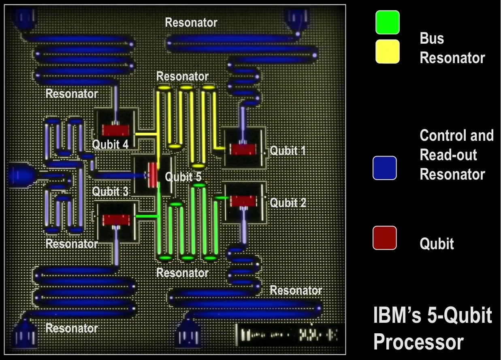
Hardware landscape · one platform at a time
Semiconductor Spins
{kind=link}
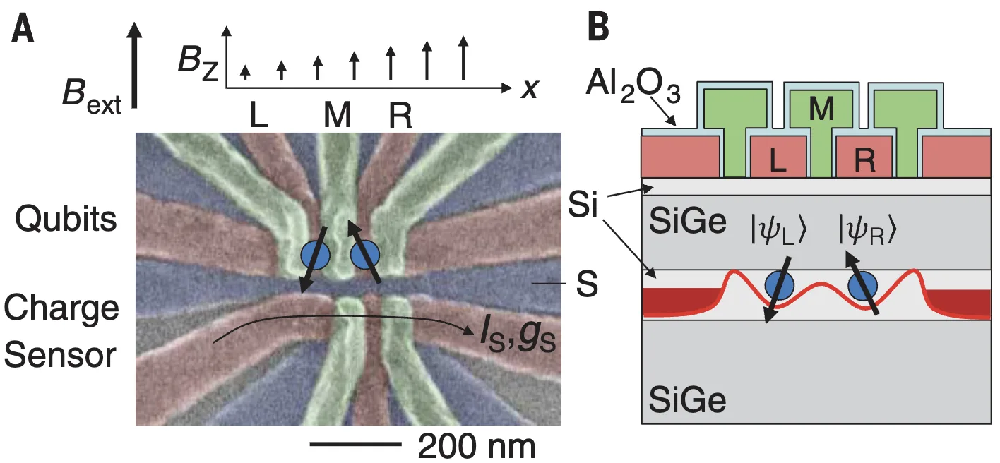
Hardware landscape · one platform at a time
Trapped Ions · Atomic Qubits
{kind=link}
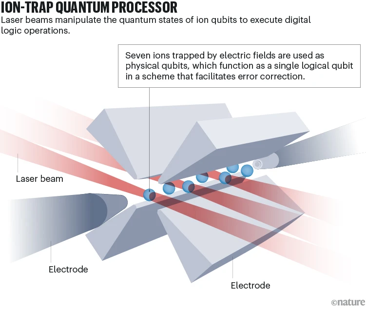
Hardware landscape · one platform at a time
Photonics
{kind=link}
{kind=link}
{kind=link}
DiVincenzo Criteria: A Hardware Design Guidance
1 · Scalable qubitsA scalable physical system with
well-characterized qubits
2 · InitializationPrepare a simple fiducial state such as
\(\ket{00\cdots0}\)
3 · Long coherenceDecoherence times must greatly exceed operation
times
4 · Universal controlA universal set of one- and two-qubit
gates
5 · MeasurementQubit-specific, high-fidelity readout
{kind=link}
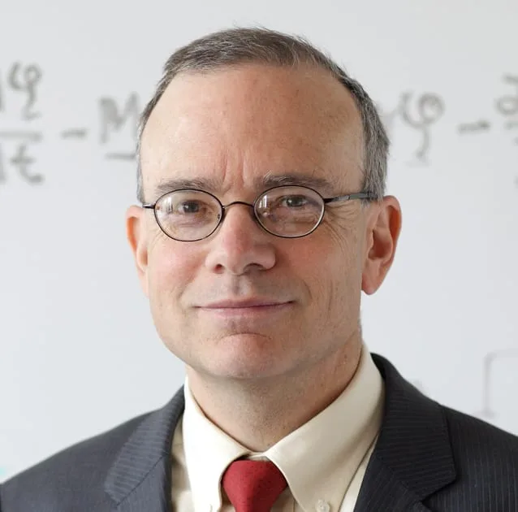
{kind=link}
{kind=link}
6 · Stationary ↔ flyingInterconvert memory qubits and
communication qubits
7 · TransmissionFaithfully send flying qubits between
locations
Source: D. P. DiVincenzo, “The Physical Implementation of Quantum Computation” (2000), IBM Research publication page. Portrait: QuTech.
Superconducting Circuits vs Trapped Ions
{kind=link}
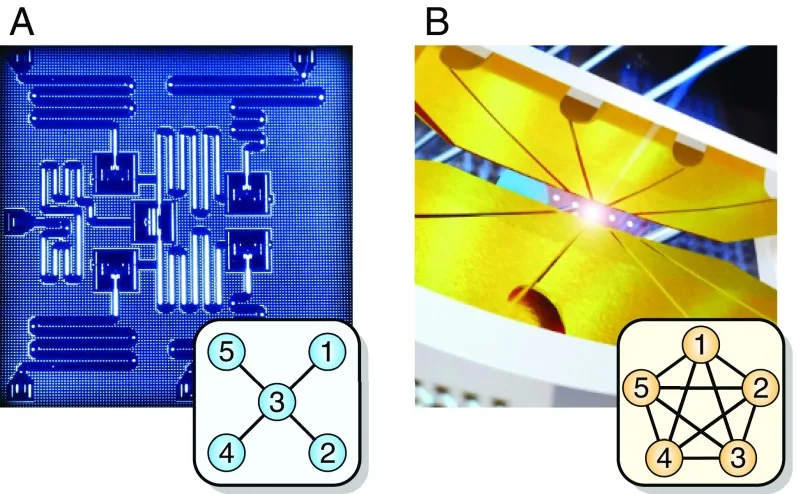
| Parameter | Superconducting circuit | Trapped ion |
|---|---|---|
| Qubit | IBM Heron: fixed-frequency transmons | AQT aqt_marmot: 40Ca+ optical qubits |
| Tuning and calibration | Tunable couplers and microwave controls require calibration. | Identical ions; laser controls and collective motional modes require calibration. |
| Coherence \(T_2\) | IBM Heron transmon:
median \(T_2\approx138\) μs. Fluxonium context: record Ramsey \(T_2^*=1.48\pm0.13\) ms. |
AQT processor: \(T_2=0.452\pm0.068\) s |
| Representative native entangling 2Q gate time \({t_{2Q}}\) | Heron native CZ ≈ 100 ns | AQT native MS \(R_{XX}\) ≈ 200 μs |
| Processor \(\frac{T_2}{t_{2Q}}\) | \(\frac{138\,\mu\mathrm{s}}{100\,\mathrm{ns}}\approx1.38\times10^3\) | \(\frac{0.452\,\mathrm{s}}{200\,\mu\mathrm{s}}\approx2.26\times10^3\) |
| Connectivity | Heavy-hex nearest-neighbour CZ connectivity | All-to-all within the eight-ion register |
| Physical motion | Qubits remain fixed on chip. | Ions remain in one linear chain; selected pairs couple through shared motion. |
Device-specific coherent-gate budget: Both reported operating points give \(T_2/t_{2Q}\sim10^3\). Gate angles and \(T_2\) protocols are not standardized across platforms, so this is an order-of-magnitude comparison—not a fidelity benchmark.
Refs: IBM Heron: Shinjo et al. (2026), DOI 10.1038/s41534-026-01193-3. AQT trapped ion: Ollitrault et al. (2024), DOI 10.1021/acscentsci.4c00058. AQT MS-gate context: Pogorelov et al. (2021), DOI 10.1103/PRXQuantum.2.020343. Fluxonium record: Somoroff et al. (2023), DOI 10.1103/PhysRevLett.130.267001. Architecture image only: Linke et al. (2017), DOI 10.1073/pnas.1618020114.
Superconducting Quantum Chip
{kind=link}
{kind=link}

{kind=link}
{kind=link}
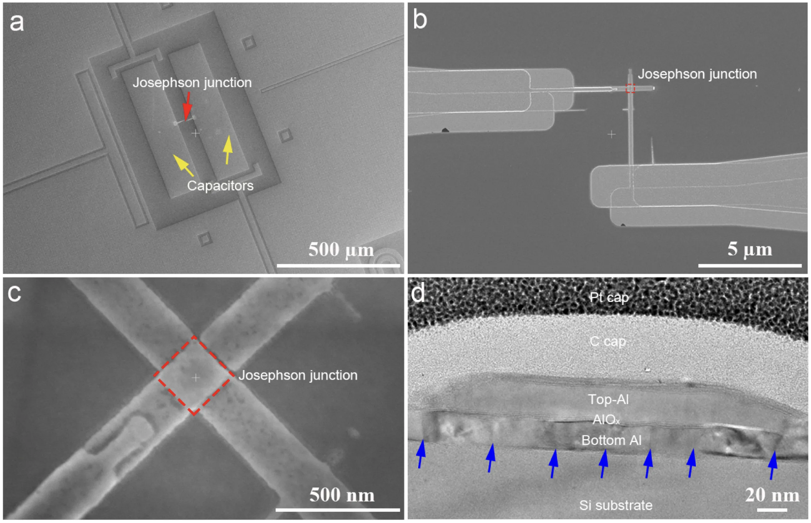
From circuit element to artificial atom · source PPT P82
Josephson Nonlinearity Separates the Transmon Transitions
Linear LC oscillator.The spacing \(\hbar\omega_r\) repeats between every pair of adjacent levels, so a resonant drive cannot isolate one transition.
Transmon circuit.The junction contributes \(-E_J\cos\phi\), which makes \(\omega_{12}\) differ from \(\omega_{01}\).
Computational subspace.The anharmonic spectrum allows microwave control to select \(\lvert0\rangle\leftrightarrow\lvert1\rangle\) while limiting leakage into \(\lvert2\rangle\).
Reference retained from PPT P82: [5] Electronics360, “How quantum computers work”.
What Is a Superconductor?
Superconductivity · discovery
Zero Resistance in 1911, Perfect Diamagnetism in 1933
{kind=link}
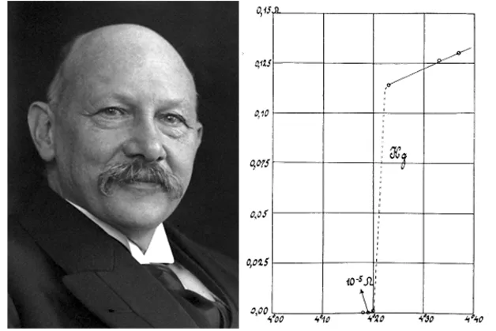
{kind=link}
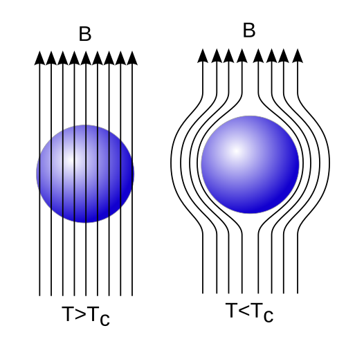
{kind=link}
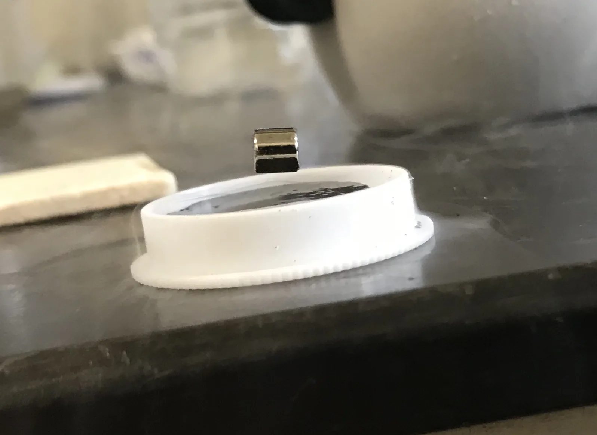
Sources retained from the original deck: OpenLearn, “Superconductivity” · Wikipedia, “Meissner effect”.
{kind=link}
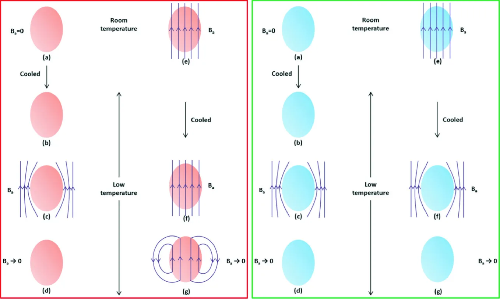
Ref. B. Shen, Fig. 2.1 in Study of Second Generation High Temperature Superconductors, Springer Theses (2020), DOI: 10.1007/978-3-030-58058-2_2.
{kind=link}
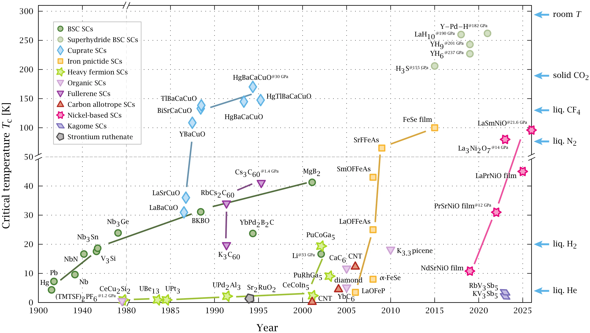
Ref. “Timeline of Superconductivity from 1900 to 2015”, Wikimedia Commons, by PJRay, licensed CC BY-SA 4.0.
Which elements superconduct
Superconductivity Is Common Among the Elements
{kind=link}
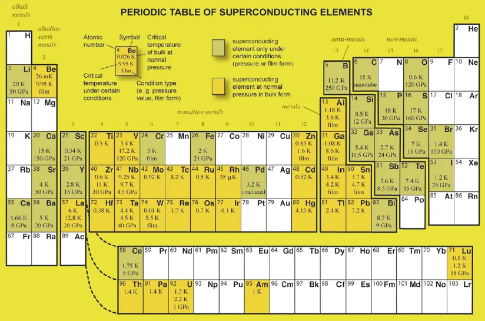
Source retained from the original deck: C. Buzea and K. Robbie, Supercond. Sci. Technol. 18, R1 (2005), DOI: 10.1088/0953-2048/18/1/R01.
Beyond “zero resistance” · BCS theory
A Superconductor Is an Ordered Quantum Phase
{kind=link}
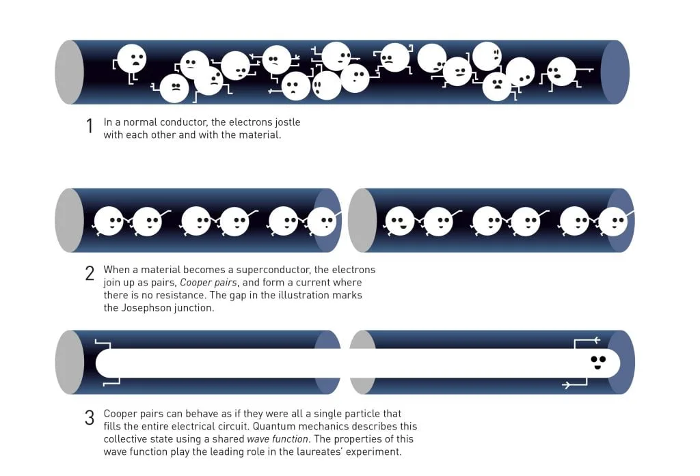
{kind=link}
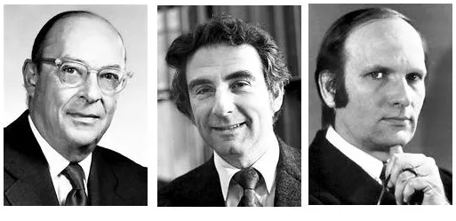
Pairing opens an energy gap \(\Delta\).
Low-energy quasiparticles and ordinary scattering are suppressed.
The condensate shares one phase.
\(\Psi=\lvert\Psi\rvert e^{i\theta}\); phase stiffness supports the Meissner response.
Cooper pairs
Pairing Extends Far Beyond One Lattice Spacing
{kind=link}
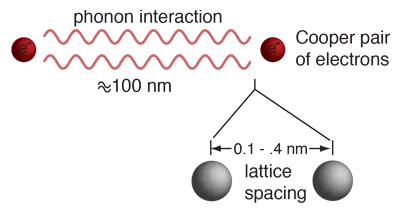
Single electrons are fermions. The Pauli exclusion
principle prevents them from all occupying one state.
A pair has integer total spin. Cooper pairs can therefore
show boson-like collective behavior.
The binding energy is small. It is typically measured in
millielectron-volts, so superconductivity requires low temperature.
The phase is macroscopic. A common condensate phase later
becomes the circuit variable across a Josephson junction.
Source and image: HyperPhysics, “Cooper Pairs”.
Phonon-mediated attraction
Lattice Distortion and Phonon Exchange
{kind=link}
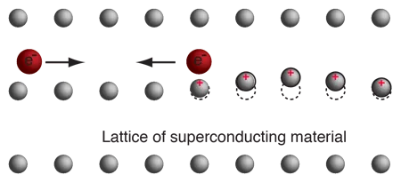
{kind=link}
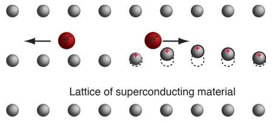
{kind=link}
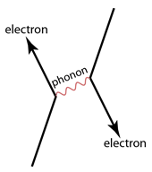
The bare Coulomb interaction remains repulsive. The delayed lattice response adds an effective low-energy attraction between time-reversed electron states. The phonon line describes the same interaction in momentum and energy language.
Source and images: HyperPhysics, “A model of Cooper pair attraction”.
Evidence for lattice participation
The Isotope Effect Connects \(T_c\) to Atomic Mass
{kind=link}
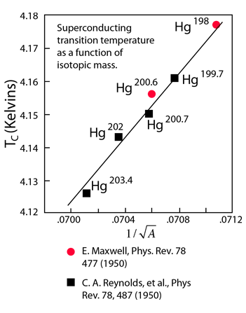
\[T_c\simeq1.14\,\Theta_D\exp\!\left[-\frac{1}{N(0)V}\right]\]
\(\Theta_D\propto M^{-1/2}\), so fixed \(N(0)V\) gives
\(T_c\propto M^{-1/2}\).
A purely electronic model would miss this dependence.
Changing the isotope changes nuclear mass without changing the electron count.
Lattice vibration frequencies depend on mass. The
shift in \(T_c\) therefore links the pairing scale to lattice motion.
The result supported phonon-mediated pairing. It
became an important experimental clue behind BCS theory.
Source and image: HyperPhysics, “Isotope Effect, Mercury”.
BCS condensation · materials and temperature
BCS Gap
\(\Delta(0)\simeq1.764\,k_BT_c\)
and
\(\Delta(T)\approx\Delta(0)\tanh\!\left[1.74\sqrt{T_c/T-1}\right]\)
{kind=link}
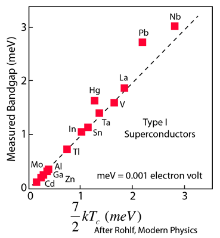
{kind=link}
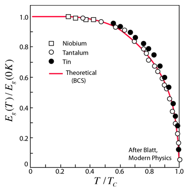
Pairing and condensation. A lattice-mediated
attraction binds electrons near the Fermi level; the pairs share a phase-coherent ground
state.
Finite excitation gap. Breaking a pair or creating
quasiparticles costs \(\Delta\), suppressing ordinary low-temperature scattering.
Al\(T_c\approx1.2\) K
\(\Delta_0\approx0.18\) meV
\(\Delta_0\approx0.18\) meV
Ta\(T_c\approx4.5\) K
\(\Delta_0\approx0.68\) meV
\(\Delta_0\approx0.68\) meV
Nb\(T_c\approx9.2\) K
\(\Delta_0\approx1.4\) meV
\(\Delta_0\approx1.4\) meV
Source and images: HyperPhysics, “BCS Theory of Superconductivity”.
Josephson Junction
Josephson junction
Cooper Pairs Tunnel Through a Thin Insulator
{kind=link}
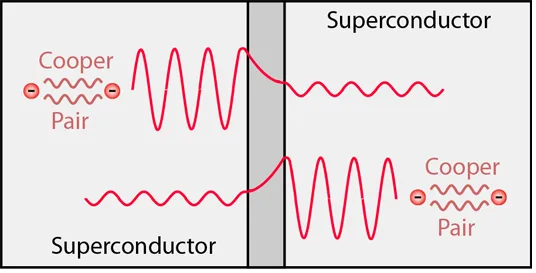
{kind=link}
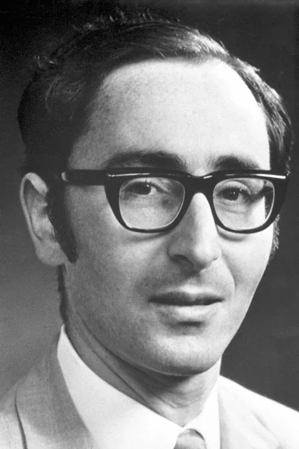
Predicted phase-driven supercurrent tunneling in 1962.
DC effect
At zero voltage, \(I=I_c\sin\varphi\).
At zero voltage, \(I=I_c\sin\varphi\).
AC effect
A constant voltage advances the phase: \(\dot\varphi=2eV/\hbar\).
A constant voltage advances the phase: \(\dot\varphi=2eV/\hbar\).
Circuit consequence:
\(U_J(\varphi)=-E_J\cos\varphi\). This nonlinear energy produces the anharmonic spectrum used
by superconducting qubits.
Source and image: HyperPhysics, “Josephson Junction”.
Nonlinear inductance · step 1 of 6
The Coupled Equation of Motion
{kind=link}
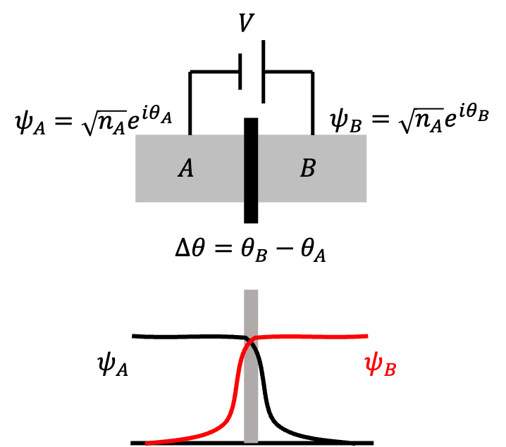
The junction's intrinsic properties are \(H_0\); a voltage \(V\) sits across it, and the coupling between the two condensates is \(K\):
\[ i\hbar \frac{\partial}{\partial t} \begin{pmatrix}\sqrt{n_A}\,e^{i\theta_A} \\ \sqrt{n_B}\,e^{i\theta_B}\end{pmatrix} = \begin{pmatrix} H_0 - \frac{qV}{2} & K \\ K & H_0 + \frac{qV}{2}\end{pmatrix} \begin{pmatrix}\sqrt{n_A}\,e^{i\theta_A} \\ \sqrt{n_B}\,e^{i\theta_B}\end{pmatrix} \]For a Cooper pair \(q=-2e\), and the diagonal becomes \(H_0 \pm eV\):
\[
i\hbar \frac{\partial}{\partial t}
\begin{pmatrix}\sqrt{n_A}\,e^{i\theta_A} \\ \sqrt{n_B}\,e^{i\theta_B}\end{pmatrix}
=
\begin{pmatrix} H_0 + eV & K \\ K & H_0 - eV\end{pmatrix}
\begin{pmatrix}\sqrt{n_A}\,e^{i\theta_A} \\ \sqrt{n_B}\,e^{i\theta_B}\end{pmatrix}
\]
Fig. 1, J. S. Tsai, Proc. Jpn. Acad. B 86, 275 (2010), DOI · derivation follows Nonlinear Inductance of Josephson Junctions.
Nonlinear inductance · step 2 of 6
Row A: Expand, Then Take the Conjugate
Differentiate the product \(\sqrt{n_A}\,e^{i\theta_A}\) in the first row:
\[ i\hbar \frac{\partial}{\partial t}\!\left(\sqrt{n_A}\,e^{i\theta_A}\right) = \frac{i}{2}\,\frac{\hbar\,e^{i\theta_A}}{\sqrt{n_A}}\,\dot{n}_A - \sqrt{n_A}\,e^{i\theta_A}\,\hbar\dot{\theta}_A = (H_0 + eV)\sqrt{n_A}\,e^{i\theta_A} + K\sqrt{n_B}\,e^{i\theta_B} \]Multiply through by \(\sqrt{n_A}\,e^{-i\theta_A}\), so every term carries \(n_A\) and the coupling term becomes a phase difference:
\[
\frac{i}{2}\hbar\,\dot{n}_A - n_A \hbar \dot{\theta}_A
= (H_0 + eV)\,n_A + K\sqrt{n_A n_B}\;e^{i(\theta_B - \theta_A)}
\]
Its complex conjugate is the same equation with \(i\to-i\):
\[
-\frac{i}{2}\hbar\,\dot{n}_A - n_A \hbar \dot{\theta}_A
= (H_0 + eV)\,n_A + K\sqrt{n_A n_B}\;e^{-i(\theta_B - \theta_A)}
\]
Nonlinear inductance · step 3 of 6
Row A: Add for the Phase, Subtract for the Population
\[
\frac{i}{2}\hbar\,\dot{n}_A - n_A \hbar \dot{\theta}_A
= (H_0 + eV)\,n_A + K\sqrt{n_A n_B}\;e^{i\Delta\theta}
\]
\[
-\frac{i}{2}\hbar\,\dot{n}_A - n_A \hbar \dot{\theta}_A
= (H_0 + eV)\,n_A + K\sqrt{n_A n_B}\;e^{-i\Delta\theta}
\]
Add. \(e^{i\Delta\theta}+e^{-i\Delta\theta}=2\cos\Delta\theta\):
\[ -2 n_A \hbar \dot{\theta}_A = 2(H_0 + eV)\,n_A + 2K\sqrt{n_A n_B}\,\cos\Delta\theta \]
\[
\hbar \dot{\theta}_A
= -(H_0 + eV) - K\sqrt{\frac{n_B}{n_A}}\,\cos\Delta\theta
\]
Subtract. \(e^{i\Delta\theta}-e^{-i\Delta\theta}=2i\sin\Delta\theta\):
\[ i\hbar \dot{n}_A = 2iK\sqrt{n_A n_B}\,\sin\Delta\theta \]
\[
\hbar \dot{n}_A = 2K\sqrt{n_A n_B}\,\sin\Delta\theta
\]
Two equations from one row: a phase equation driven by \(\cos\Delta\theta\), and a population equation driven by \(\sin\Delta\theta\).
Nonlinear inductance · step 4 of 6
Row B: Add for the Phase, Subtract for the Population
\[
\frac{i}{2}\hbar\,\dot{n}_B - n_B \hbar \dot{\theta}_B
= (H_0 - eV)\,n_B + K\sqrt{n_A n_B}\;e^{- i\Delta\theta}
\]
\[
-\frac{i}{2}\hbar\,\dot{n}_B - n_B \hbar \dot{\theta}_B
= (H_0 - eV)\,n_B + K\sqrt{n_A n_B}\;e^{+ i\Delta\theta}
\]
Add. \(e^{i\Delta\theta}+e^{-i\Delta\theta}=2\cos\Delta\theta\):
\[ -2 n_B \hbar \dot{\theta}_B = 2(H_0 - eV)\,n_B + 2K\sqrt{n_A n_B}\,\cos\Delta\theta \]
\[
\hbar \dot{\theta}_B
= -(H_0 - eV) - K\sqrt{\frac{n_A}{n_B}}\,\cos\Delta\theta
\]
Subtract. \(e^{-i\Delta\theta}-e^{i\Delta\theta}=-2i\sin\Delta\theta\):
\[ i\hbar \dot{n}_B = -2iK\sqrt{n_A n_B}\,\sin\Delta\theta \]
\[
\hbar \dot{n}_B = -2K\sqrt{n_A n_B}\,\sin\Delta\theta
\]
Same shape as Row A, opposite sign on the population: \(\dot n_B = -\dot n_A\). Pairs leaving A arrive at B — that is the current.
Nonlinear inductance · step 5 of 6
The Four Equations, and the Current They Imply
\[\hbar \dot\theta_A = -(H_0 + eV) - K\sqrt{\tfrac{n_B}{n_A}}\cos\Delta\theta\]
\[\hbar \dot\theta_B = -(H_0 - eV) - K\sqrt{\tfrac{n_A}{n_B}}\cos\Delta\theta\]
\[\hbar \dot n_A = \phantom{-}2K\sqrt{n_A n_B}\,\sin\Delta\theta\]
\[\hbar \dot n_B = -2K\sqrt{n_A n_B}\,\sin\Delta\theta\]
Subtract the first pair. \(H_0\) drops out, leaving the voltage–phase relation; for a symmetric junction the \(\cos\) term vanishes:
\[
\hbar \left(\dot{\theta}_B-\dot{\theta}_A\right)
= 2eV + K\!\left(\frac{n_B - n_A}{\sqrt{n_A n_B}}\right)\!\cos\Delta\theta
\]
\[
\xrightarrow{\;n_A=n_B\;} \Delta\dot{\theta}
= \frac{2eV}{ \hbar}
\]
Combine the second pair with \(-\dot n_A = \dot n_B \equiv I/(-2e)\) to get the current–phase relation:
\[
I = \frac{4eK}{\hbar}\sqrt{n_A n_B}\,\sin\Delta\theta
\;\equiv\; I_c \sin\Delta\theta
\]
Nonlinear inductance · step 6 of 6
The Junction Is a Nonlinear Inductor
\[
\Delta\dot{\theta}
= \frac{2eV}{ \hbar}
\]
\[
I = \frac{4eK}{\hbar}\sqrt{n_A n_B}\,\sin\Delta\theta
\;\equiv\; I_c \sin\Delta\theta
\]
Comparing with \(V=L\,\dot{I}\) identifies the inductance, which depends on the phase:
\[
L_J(\Delta\theta) = \frac{\hbar}{2e\,I_c\cos\Delta\theta}
= \frac{\Phi_0}{2\pi I_c \cos\Delta\theta},
\qquad \Phi_0 = \frac{2\pi\hbar}{2e} = \frac{h}{2e}
\]
The energy stored in the junction \(U_J\) is:
\[ U_J =\int IV\,dt = \int I_c\sin\Delta\theta \cdot \frac{\hbar}{2e}\Delta\dot\theta\,dt = \frac{\hbar I_c}{2e}\int \sin\Delta\theta \; d(\Delta\theta) = -\frac{\hbar I_c}{2e}\cos\Delta\theta \equiv -\frac{I_c \Phi_0}{2\pi}\cos\Delta\theta \]
\[
E_J = \frac{I_c \Phi_0}{2\pi} = \frac{\hbar I_c}{2e}
\qquad\Longrightarrow\qquad
U_J(\Delta\theta) = -E_J\cos\Delta\theta
\]
We redefine \(\varphi\equiv\Delta\theta\) as our variables:
\[
\dot{\varphi} = \frac{2eV}{ \hbar},\qquad
I = I_c \sin\varphi ,\qquad
U_J(\varphi) = -E_J\cos\varphi
\]
Nonlinear Oscillator
\[
\dot{\varphi} = \frac{2eV}{ \hbar},\qquad
U_J(\varphi) = -E_J\cos\varphi
\]
\[
U_C=\frac{1}{2}CV^2=\frac{1}{2}C\left(\frac{\hbar}{2e}\dot{\varphi}\right)^2.
\]
Canonical pair
Lagrangian and the Canonical Pair
The Lagrangian \(\mathcal{L}=T-U\) is :
\[ \mathcal{L}(\varphi,\dot{\varphi}) =\frac{1}{2}C\left(\frac{\hbar}{2e}\dot{\varphi}\right)^2 -\left(-E_J\cos\varphi\right) ={\frac{1}{2}C\left(\frac{\hbar}{2e}\right)^2\dot{\varphi}^{\,2}+E_J\cos\varphi}. \]
The canonical momentum conjugate to \(\varphi\) is:
\[ p_\varphi\equiv\frac{\partial\mathcal{L}}{\partial\dot{\varphi}} =C\left(\frac{\hbar}{2e}\right)^2\dot{\varphi} \quad\to \quad \dot{\varphi}=\frac{p_\varphi}{C\left(\frac{\hbar}{2e}\right)^2} \]
The Hamiltonian is obtained through the Legendre transformation \(\mathcal{H}=p_\varphi\dot{\varphi}-\mathcal{L}\). Solving for \(\dot{\varphi}\) and substituting:
\[ , \qquad \mathcal{H} =\frac{p_\varphi^2}{C\left(\frac{\hbar}{2e}\right)^2} -\frac{1}{2}\frac{p_\varphi^2}{C\left(\frac{\hbar}{2e}\right)^2} -E_J\cos\varphi =\frac{p_\varphi^2}{2C\left(\frac{\hbar}{2e}\right)^2}-E_J\cos\varphi. \]
The meaning of \(p_\varphi\) is the relative Cooper pair number \[ p_\varphi \overset{\dot{\varphi}=\frac{2eV}{\hbar}}{=}C\left(\frac{\hbar}{2e}\right)V \overset{V=\frac{Q}{C}}{=}\frac{\hbar}{2e}Q \overset{Q=2en}{=}{\hbar n}. \]
Legendre transform
The Hamiltonian
Recognising \(p_\varphi=\frac{\hbar}{2e}Q\), the first term becomes \(\frac{Q^2}{2C}\); with \(Q=2en\):
\[ \mathcal{H}=\frac{Q^2}{2C}-E_J\cos\varphi =\frac{(2en)^2}{2C}-E_J\cos\varphi =\frac{2e^2}{C}n^2-E_J\cos\varphi. \]
Define the charging energy \(E_C\equiv\frac{e^2}{2C}\), so that \(\frac{2e^2}{C}=4E_C\):
\[ {\mathcal{H}=4E_C n^2-E_J\cos\varphi}. \]
Canonical quantization · 1 of 4
Canonical Quantization of \(n\) and \(\varphi\)
The canonical pair is \(\varphi\) and \(p_{\varphi}=\hbar n\). Promote both to operators:
\[
\left[\,\hat{\varphi},\ \hat{p}_{\varphi}\,\right]=i\hbar
\qquad\Longrightarrow\qquad
\left[\,\hat{\varphi},\ \hbar\,\hat{n}\,\right]=i\hbar
\qquad\Longrightarrow\qquad
\left[\,\hat{\varphi},\ \hat{n}\,\right]=i
\]
In analogy, \(\left[\hat{x},\hat{p}\right]=i\hbar\) and \(\langle x| p \rangle = \frac{1}{\sqrt{2\pi\hbar}} e^{\frac{ipx}{\hbar}}\), we have
\[
\langle \varphi| n \rangle = \frac{1}{\sqrt{2\pi}} e^{i \varphi n}
\]
Since \(\varphi+2\pi=\varphi\),
\[ \langle \varphi + 2\pi | n \rangle = \frac{1}{\sqrt{2\pi}} e^{i \left(\varphi+2\pi\right) n}\overset{!}{=}\frac{1}{\sqrt{2\pi}} e^{i \varphi n} \]
\[
n \in \mathbb{Z}, \qquad n = 0,\ \pm 1,\ \pm 2,\ \ldots
\qquad\qquad
| n=0 \rangle,\ | n=\pm 1 \rangle,\ | n=\pm 2 \rangle,\ \ldots
\]
Canonical quantization · 2 of 4
Schrödinger Equation in the number Basis
The quantized Hamiltonian, \[ {\hat{\mathcal{H}}=4E_C \hat{n}^2-E_J\cos\hat{\varphi}}. \]
Using \[\langle \varphi | e^{i\hat{\phi}} | n \rangle =e^{i \phi} \langle \varphi | n \rangle =e^{i \phi}*\frac{1}{\sqrt{2\pi}} e^{i \varphi n} =\frac{1}{\sqrt{2\pi}} e^{i \varphi \left(n+1\right)} =\langle \varphi | n+1 \rangle\]
\[ {e^{\pm i\hat{\varphi}}|n\rangle=|n\pm1\rangle}. \]
The Josephson term \[-E_J\cos\hat{\varphi}=-\frac{E_J}{2}\left(e^{i\hat{\varphi}}+e^{-i\hat{\varphi}}\right)\]
In the number basis,\[ {\hat{H} =4E_C\sum_{n\in\mathbb{Z}}n^2|n\rangle\langle n| -\frac{E_J}{2}\sum_{n\in\mathbb{Z}} \left(|n+1\rangle\langle n|+|n\rangle\langle n+1|\right)}. \]
Transmon limit · 1 of 2
Transmon Limit: \(E_J \gg E_C\)
Large \(E_J/E_C\) confines \(\varphi\) to the bottom of the well, so expand the cosine:
\[
-E_J\cos\varphi
=-E_J+\frac{E_J}{2}\varphi^{2}
-\frac{E_J}{4!}\varphi^{4}
+\frac{E_J}{6!}\varphi^{6}-\cdots
\]
Substituting into \(\hat{\mathcal{H}}=4E_C\hat{n}^{\,2}-E_J\cos\hat{\varphi}\), dropping the constant \(-E_J\):
\[
\hat{\mathcal{H}}
= 4E_C\,\hat{n}^{\,2}
+ \frac{E_J}{2}\,\hat{\varphi}^{\,2}
- \frac{E_J}{4!}\,\hat{\varphi}^{\,4}
+ \frac{E_J}{6!}\,\hat{\varphi}^{\,6}
- \cdots
\]
{kind=link}
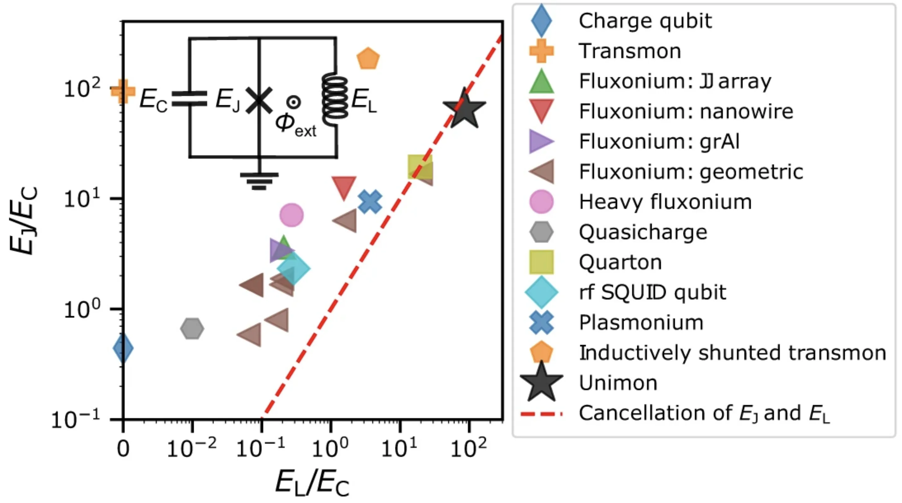
Figure 1a, E. Hyyppä et al., “Unimon qubit”, Nat. Commun. 13, 6895 (2022), DOI: 10.1038/s41467-022-34614-w, CC BY 4.0.
Transmon limit · 2 of 2
Harmonic Part and the Quartic Perturbation
Split at fourth order, \(\hat{\mathcal{H}}=\hat{\mathcal{H}}_0+\Delta \hat{\mathcal{H}}\):
\[
\hat{\mathcal{H}}_0 = 4E_C\,\hat{n}^{\,2} + \frac{E_J}{2}\,\hat{\varphi}^{\,2}
\]
\[
\Delta \hat{\mathcal{H}} = - \frac{E_J}{4!}\,\hat{\varphi}^{\,4}
+ \frac{E_J}{6!}\,\hat{\varphi}^{\,6}
- \cdots
\]
\(\hat{\mathcal{H}}_0\) is a harmonic oscillator in \(\varphi\).
\[
\hat{\varphi} = \left(\frac{2E_C}{E_J}\right)^{1/4}\left(a+a^{\dagger}\right),
\qquad
\hat{n} = \frac{i}{2}\left(\frac{E_J}{2E_C}\right)^{1/4}\left(a^{\dagger}-a\right)
\]
\[
\hat{\mathcal{H}}_0=\hbar\omega_p \left(a^{\dagger}a+\frac{1}{2}\right),
\qquad
\hbar\omega_p = \sqrt{8E_JE_C} = \frac{\hbar}{\sqrt{L_JC}}
\]
Substituting \(\hat{\varphi}\) into \(\Delta \hat{\mathcal{H}}\):
\[ \Delta \hat{\mathcal{H}} = -\frac{E_J}{4!}\left(\frac{2E_C}{E_J}\right)\left(a+a^{\dagger}\right)^{4} + \frac{E_J}{6!}\left(\frac{2E_C}{E_J}\right)^{3/2}\left(a+a^{\dagger}\right)^{6} - \cdots \] \[ = -\frac{E_C}{12}\left(a+a^{\dagger}\right)^{4} + \frac{\sqrt{2}}{360}\,E_C\sqrt{\frac{E_C}{E_J}}\left(a+a^{\dagger}\right)^{6} - \cdots \]Energy corrections · 2 of 3
Quartic Expectation Value
First-order shift \(E^m=E_0^m+\delta E^m\), where \(\hat{\mathcal{H}}_0 |m\rangle =E^m_0 |m\rangle \):
\[ \delta E^m=\langle m\rvert\,\left[-\frac{E_C}{12}\left(a+a^{\dagger}\right)^{4}\right]\,\lvert m\rangle \]Only terms with equal powers of \(a\) and \(a^{\dagger}\) survive:
\[ \left\langle m\left\lvert aaa^{\dagger}a^{\dagger} + aa^{\dagger}aa^{\dagger} + aa^{\dagger}a^{\dagger}a + a^{\dagger}aaa^{\dagger} + a^{\dagger}aa^{\dagger}a + a^{\dagger}a^{\dagger}aa \right\rvert m\right\rangle \]Normal-ordering with \(aa^{\dagger}=a^{\dagger}a+1\):
\[ = \left\langle m\left\lvert 6\,a^{\dagger}aa^{\dagger}a + 6\,a^{\dagger}a + 3 \right\rvert m\right\rangle \]
\[
\left\langle m\left\lvert \left(a+a^{\dagger}\right)^{4}\right\rvert m\right\rangle
= 6m^{2}+6m+3
\qquad\Longrightarrow\qquad
\delta E^m = -\frac{E_C}{12}\left(6m^{2}+6m+3\right)
\]
Energy corrections · 3 of 3
Level Spacing and Anharmonicity
\[
E^m = \sqrt{8E_JE_C}\left(m+\frac{1}{2}\right)
- \frac{E_C}{12}\left(6m^{2}+6m+3\right)
\]
The spacing between levels \(m\) and \(m-1\):
\[
\Delta E^{m}_{m-1}\equiv E^m-E^{m-1}
= \sqrt{8E_JE_C} - \frac{E_C}{12}\left(12m\right)
= \sqrt{8E_JE_C} - m\,E_C
\]
In circuit quantities, with \(E_C=\dfrac{e^{2}}{2C}\):
\[ \Delta E^{m}_{m-1} = \frac{\hbar}{\sqrt{L_JC}} - m\,\frac{e^{2}}{2C} \]Each step is smaller than the last by \(E_C\). That uneven step is the anharmonicity; \(\omega_{12}-\omega_{01}=-E_C/\hbar\).
\[
\alpha \equiv \hbar\omega_{12}-\hbar\omega_{01} = -E_C,
\qquad
\eta \equiv \frac{\alpha}{\hbar\omega_{01}} \approx -\sqrt{\frac{E_C}{8E_J}}
\]

Anharmonicity · how big, and what it costs
Anharmonicity \(\alpha\) and \(\eta\)
\[
\alpha \equiv \hbar\omega_{12}-\hbar\omega_{01} = -E_C,
\qquad
\eta \equiv \frac{\alpha}{\hbar\omega_{01}}
\approx -\sqrt{\frac{E_C}{8E_J}}
\]
Example: \[\frac{E_J}{E_C} = 50\] \[ \eta \approx -\sqrt{\frac{1}{400}} = -5\% \]
Typical device. \[\frac{\omega_{01}}{2\pi} \approx 5\ \mathrm{GHz}\]
\[\alpha \approx -200\ \mathrm{MHz}\]
\[
\eta \approx \frac{-200\ \mathrm{MHz}}{5\ \mathrm{GHz}} = -4\%
\]
PHYS598500 · Week 2